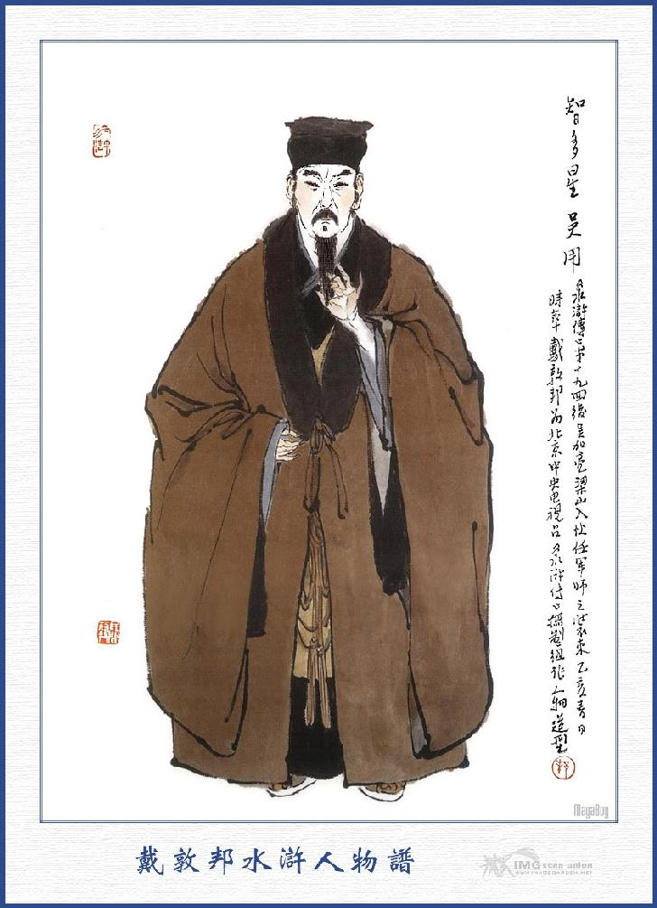
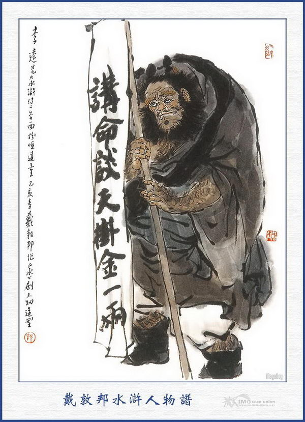
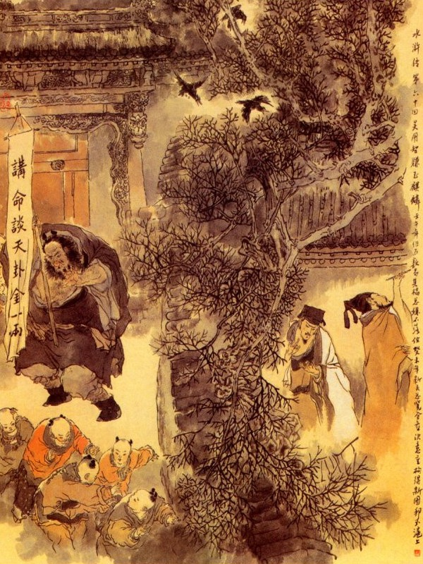
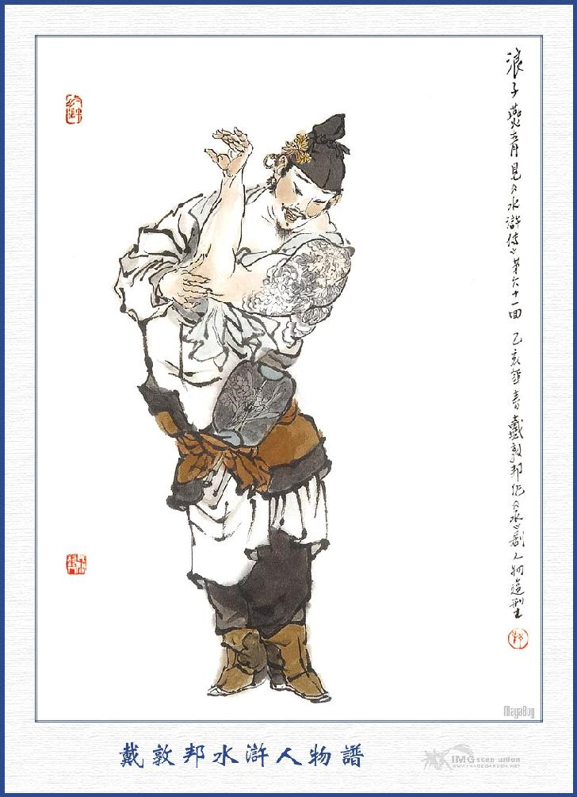
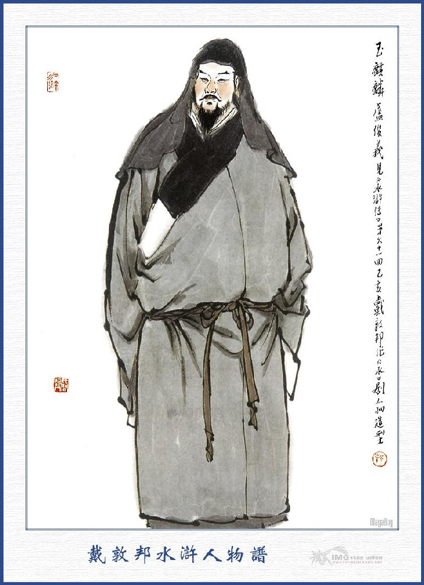
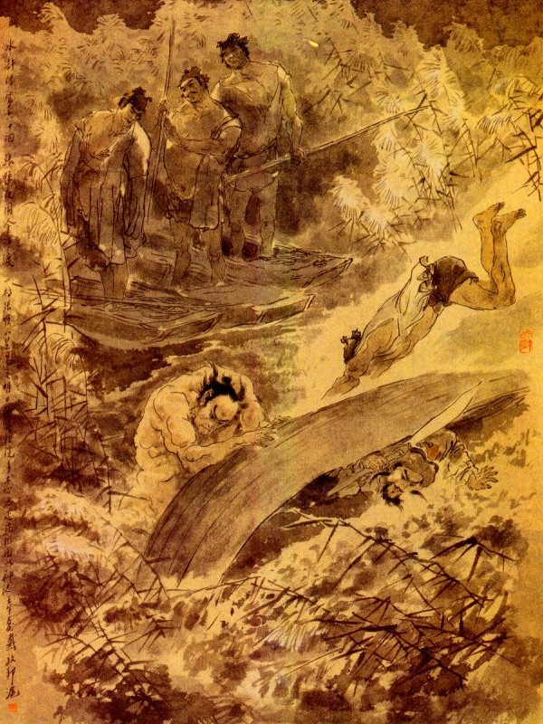

Khi đó Ngô Dụng nói với Tống Giang rằng:
- Tôi xin dùng ba tấc lưỡi vào tới Bắc Kinh, thuyết cho Lư Tuấn Nghĩa, đi đến Lương Sơn thực dễ như thò bàn tay vào trong túi lấy đồ vật vậy. Song phải có một số người nào mặt mũi kỳ quái đi với tôi thì mới được.
Ngô Dụng vừa nói dứt lời thì Hắc Toàn Phong Lý Quỳ kêu to lên rằng:
- Quân Sư Ca Ca cho tôi đi với.
Tống Giang quát mắng rằng:
- Anh đi không được, có phải là việc đốt nhà giết người, cướp kho phá phủ thì mới dùng đến anh, còn việc này phải cẩn thận vững vàng mà tính khí anh như thế thì đi làm sao được?
Lý Quỳ nói rằng:
- Lần nào cũng thế, ông bảo tôi xấu. chê tôi. không cho tôi đi.
Không phải là chê, nhưng ở trong phủ Đại Danh bọn do thám rất nhiều, nếu lỡ ra họ biết thì uổng mạng không?
- Không cần, Nếu tôi không đi thì chắc cũng chả người nào trúng ý quân sư được.
Ngô Dụng bảo Lý Quỳ rằng:
- Nếu ngươi y được ba điều này thì ta cho đi, bằng không thì cứ ngồi yên ở nhà đó.
Lý Quỳ đáp rằng:
- Đến ba mươi điều tôi cũng y được cả, cứ gì ba điều.
Ngô Dụng nói rằng:
- Điều thứ nhất là tánh ngươi nóng nảy như lửa, từ nay phải bỏ rượu đi rồi trở về mới được uống; điều thứ hai, khi đi đường phải ăn mặc giả làm đạo đồng theo ta; hễ ta bảo câu gì không được ngang trái. Còn điều thứ ba thì khó lắm đây, bắt đầu từ ngày mai trở đi ngươi không được nói phải giả làm thằng câm vậy. Có y được ba điều đó thì ta sẽ cho đi.
Lý Quỳ lắc đầu đáp rằng:
- Không uống rượu cũng được, tôi xin vâng cả. Duy bắt tôi không được nói thì khổ chết tôi mất.
Người há miệng ra lại sinh sự lôi thôi, không được.
Lý Quỳ vỗ tay mà rằng:
- Được rồi, tôi ngậm tay vào miệng là được rồi.
Các Đầu Lĩnh nghe nói đều cười ầm cả lên.
Đoạn rồi trong sơn trại đặc ngay tiệc tiễn hành ngay chiều hôm ấy. Đến sáng hôm sau Ngô Dụng sắp sửa hành lý, cho Lý Quỳ ăn mặc giả làm đạo đồng, quảy gánh xuống núi. Tống Giang cùng các Đầu Lĩnh đưa chân Ngô Dụng ra bến Kim Sa dặn dò cẩn thận về việc trông coi Lý Quỳ rồi mới cùng nhau về trại.

NGÔ DỤNG
Người cùng Lý Quỳ đi trong mấy hôm, Ngô Dụng bị Lý Quỳ cằn nhằn rất là khổ sở. Cách mấy hôm đi đến thành Bắc Kinh, hai người tìm vào hàng trọ. Chiều hôm đó Lý Quỳ xuống làm cơm, không biết làm sao đến tên tiểu nhị ở hàng cơm, đỗ cả máu mồm máu mũi ra.
Tên tiểu nhị liền mách với Ngô Dụng rằng:
- Tên đạo đồng cửa ngài dữ tợn quá chừng. Tôi đốt lửa khí chậm một chút mà hắn đánh tôi hộc cả máu mồm ra đây.
Ngô Dụng dỗ dành tên tiểu nhị, đưa đền cho mươi quan tiền để yên chuyện đi rồi mắng trách Lý Quỳ suốt đêm hôm ấy.
Sáng hôm sau dậy sớm cơm nước xong rồi, Ngô Dụng gọi Lý Quỳ vào phòng mà dặn rằng:
- Ngươi là quá cố sống chết đòi đi rồi đi đường cẳn rẳn suốt ngày, thực là khổ cho người ta. Ngày nay vào thành, không phải chuyện chơi, ngươi đừnh làm uổng chết mạng người ta mới được.
Lý Quỳ nói rằng:
- Làm gì tôi không biết mà phải dặn.
Ngô Dụng lại nói rằng:
- Bây giờ ta có một ám hiệu này, ngươi phải nhớ mới được. Hễ khi nào ta lắc đầu thì ngươi không được cựa động gì đấy.
Lý Quỳ gật đầu vâng lời, rôi hai người cùng thay hình đổi dạng mà vào thành, Ngô Dụng đội cái khăn sa gần đến mi mắt, mình mặc áo đạo phục lụa trắng viền đen, thắc lưng màu rực rỡ, đi đôi giày vải mũi vuông tay cầm cái chuông đồng con con. Lý Quỳ kết tóc làm hai trái đào ở trên đầu, mặc áo rộng ngắn bằng vải thường, thắc lưng tua ngắn, đi đôi giày tồi tàn, quảy một mẩu gỗ, treo giấy cáo bạch lên trên, viết mấy chữ "Xem số đoán vận, mỗi quẻ lạng bạc".
Hai thầy trò ăn mặc xong rồi cùng nhau vào cửa thành Bắc Kinh. Bấy giờ đương hồi trộm cướp rất nhiều châu huyện cũng đều phòng bị rất nghiêm ngặt cả. Gia dĩ ở đây là một nơi phồn hoa đệ nhất ở Bắc Hà, lại có quan Lương Trung Thư thống lãnh đại binh ở đó, nên sự canh phòng lại càng cẩn thận hơn các nơi.
Ngô Dụng và Lý Quỳ đi vào cửa thành, thấy có bốn năm mươi tên lính đứng hầu một ông quan coi thành ở đó. Ngô Dụng bèn chạy đến chắp tay vái chào.
Quân sĩ liền hỏi rằng:
- Nhà thầy ở đâu tới đây? Ngô Dụng đáp:
- Tôi họ Vương tên Dụng, tên đạo đòng này họ Lý, hai thầy trò đi đoán số kiếm ăn, nay định đến quý quận đây, xem ai có lòng muốn xem số mệnh thì tôi xin đoán giúp.
Nói đoạn giở quyển văn số ra để dẫn cho chúng xem.
Bọn lính bảo Ngô Dụng rằng:
- Thằng đạo đồng nhà thầy, trông hai con mắt nó như thằng ăn cướp thế kia.

LÝ QUỲ
Lý Quỳ nghe nói toan sừng sộ lên. Ngô Dụng vội lắc đầu cho Lý Quỳ im đi rồi nói với bọn lính rằng:
- Các ngài không biết, chúng tôi thật là khổ quá, thằng bé này vừa câm vừa điếc, chỉ được cái sức khoẻ hơn người, vả chăng là con cháu trong nhà, nên bất đắc dĩ phải mang nó đi mà thực nó chẳng biết một chút gì cả, xin các ngài tha lỗi cho.
Nói đoạn vái chào mà đi. Lý Quỳ tập tễnh theo sau, bước thấp bước cao cùng đi vào lối chợ.
Ngô Dụng lắc chuông loong coong miệng đọc rằng:
Nhan Hồi chết sớm vì đâu?
Để ông Bành Tổ sống lâu ngót nghìn.
Cam La sớm đã uy quyền,
Tử Nha đầu bạc mới nên tướng tài.
Phạm Đang nghèo khổ nhất đời,
Thạch Sùng giàu có bới trời xui nên.
Đó là thời vận mà mệnh trời đó. Ai muốn biết vận mạng một đời, sang hèn sống chết thì xin cho một lạng bạc.
Nói đoạn lại lắc chuông loong coong mà đi. Tụi trẻ con ở thành Bắc Kinh có năm mươi đứa chạy theo, vừa cười vừa nói ầm ĩ cả lên.
Ngô Dụng đi qua cửa nhà Lưu Viên Ngoại lúc ấy đương cùng chủ quản ngồi giải ở trong nhà, nghe ngoài phố có tiếng huyên náo ầm ầm. Liềm gọi người nhà lên hỏi rằng:
- Trên phố xá có việc gì mà ầm ầm lên thế?
- Bẩm ngài, có chuyện buồn cươi quá: Ngoài phố có một thầy số ở đâu mới đến, đòi mỗi quẻ lấy một lạng bạc thì ai có tiền mà xem? Ông ta lại có một thằng đạo đồng đi sau, trông rất ghê tởm, hết đi rồi lại lại, chúng tôi không sao mà nhịn cười được.
Lư Tuấn Nghĩa nói:
- Họ nói đắt như vậy, chắc là họ biết rộng, bay ra đón vào đây ta xem.
Tên người nhà quay ra bảo Ngô Dụng rằng:
- Tiên Sinh ôi! Viên Ngoại cho mời tiên sinh vào.
Ngô Dụng hỏi:
- Viên Ngoại nào mời tôi?
Ông Lư Viên Ngoại mời thầy đấy.
Ngô Dụng liền cùng với đồng đạo, theo tên người nhà vào. Khi vào đến đầu nhà Ngô Dụng chõ chỗ ghế ở đó, cho Lý Quỳ ngồi đợi rồi vào chào Lư Tuấn Nghĩa.

Lư Tuấn Nghĩa đứng chào Ngô Dụng rồi hỏi rằng:
- Tiên sinh quý tính cao danh là gì?
Ngô Dụng đáp:
- Tôi họ Vương tên Dụng, biệt hiệu là Thiên Khẩu, nguyên quán ở đất Sơn Đông, biết số Hoàng Cực Tiên Thiên, rõ được sự sống chết, hèn sang trong một đời người. Mỗi quẻ cứ đủ một lạng bạc thì tôi mới đoán.
Lư Tuấn Nghĩa nghe nói, mời Ngô Dụng vào ngồi cái gác nhỏ ở nhà trong rồi sai người pha nước uống. Đoạn rồi gọi người nhà lấy lên một lạng bạc đặt quẻ và nhờ Ngô Dụng đoán số giúp cho.
Ngô Dụng hỏi:
- Năm nay ngài bao nhiêu tuổi? Sinh ngày tháng nào?
Lư Tuấn Nghĩa đáp:
- Thưa thầy tôi chỉ hỏi việc dữ, không cần phải hỏi việc phú quý vinh hoa. Tôi năm nay ba mươi hai tuổi, sinh giờ Đinh Mão, ngày Bính Dần, tháng Ất Sửu, năm Giáp Tý, xin ngài xem sự hành tàng sau này thế nào?
Ngô Dụng nghe đoạn lấy ra một con toán bằng sắt tính toán một lúc rồi đập con toán kêu lên rằng:
- Quái lạ!
Lư Tuấn Nghĩa kinh ngạc hỏi rằng:
- Có việc gì lành dữ thế nào, xin thấy cứ nói.
- Tôi nói cho đúng, chắc ngài lại cạnh lòng.
- Có can chi, chúng tôi chỉ nhờ tiên sinh, chỉ bảo đường mê, xin tiên sinh cứ nói cho.
- Cứ như cung mệnh của Viên Ngoại thì chỉ trong một trăm ngày nữa, tất có cái nạn đao huyết, gia tư cũng khó lòng giữ được mà phải bị chết vì đao kiếm chứ không chơi!
Lư Tuấn Nghĩa cười mà rằng:
- Tiên sinh nói sai rồi, tôi ở đất Bắc Kinh, sinh trưởng vốn nhà hào phú, trong họ không có con trai nào phạm phép, trong nhà không có con gái nào hai chồng. Vả chăng tôi đây xưa nay tính nết cẩn thận, việc gì vô lý không làm, của nào phi nghĩa không lấy, lẽ nào ngày nay lại bị nạn đao huyết thế được?
Ngô Dụng nghe vậy biến sắc mặt, cầm trả tiền Lư Tuấn Nghĩa rồi đứng phắt vậy thở dài mà rằng:
- Thiên hạ nguyên chỉ thích những người a dua xiểm nịnh cả. thôi, rõ ràng là "Chỉ đường trỏ lối cho hẳn hoi, lại cho nói thẳng là lời bất lương". Thối xin chào ngài tôi xin đi.
Lư Tuấn Nghĩa vội ôn tồn mà rằng:
- Sao Tiên sinh vội giận thế? Tôi nói đùa đó thôi. có can chi? Xin Tiên sinh hãy thử lại để chỉ giáo cho tôi.
- Thưa ngài, xưa nay những lời nói thực vẫn khó tin.
- Thôi, Tiên sinh chớ vội giận, cứ nói cho tôi biết, thế nào tôi vẫn vâng lời dạy.
- Ngài phải biết trong cung số của ngài, nhất thiết điều gì cũng tốt. Duy năm nay phạm sao Tuế Quân, cho nên mới gặp hoạn nạn, như chỉ trong trăm ngày nữa; thì tất là đầu xác lìa nhau, không thể nào tránh được.
- Tiên sinh có cách gì khả dĩ thoát được chăng?
Ngô Dụng lại cầm con toán tính một lúc nữa rồi nghĩ ngợi hồi lâu mà lẩm bẩm rằng:
- Phen này duy có đi về mạn Tốn Phương, ở về phía Đông Nam, chừng hơn ngàn dặm thì may ra mới có thể thoát nạn được. Nhưng cũng có điều đáng sợ, duy không việc gì đến tính mạng mà thôi.
Lư Tuấn Nghĩa cảm tạ mà rằng:
- Nếu tôi được thoát nạn này sẽ xin hậu tạ Tiên Sinh.
Ngô Dụng nói:
- Tôi có bốn câu thơ đoán về cung số của ngài, xin đọc để ngài nghe. Ngài nên viết trên vách rồi sau này nghiệm ra, mới biết tôi nói không sai.
Lư Tuấn Nghĩa gọi người nhà lấy nghiêng bút rồi bảo Ngô Dụng đọc bốn câu thơ mà tự viết trên vách vôi.
Ngô Dụng đọc bốn câu thơ rằng:
Lư hoa phơ phất chiếc thuyền bơi,
Tuấn kiệt dong chơi buổi tối trời,
Nghĩa đến khi cùng là số mệnh.
Phản minh lánh nạn dễ như chơi
Lư Tuấn Nghĩa viết xong, Ngô Dụng thu nhặt con toán rồi vái chào đi ra.
Lư Tuấn Nghĩa nói rằng:
- Tiên sinh ở chơi ăn cơm rồi sẽ đi.
Ngô Dụng từ tạ rằng:
- Cám ơn Viên Ngoại, chúng tôi xin đi để đoán số, không thì trễ mất, để lần sau xin đến hầu ngài.
Nói đoạn quay gót đi ra. Lư Tuấn Nghĩa đưa chân ra đến cửa rồi Ngô Dụng vái chào Lư Tuấn Nghĩa mà cùng Lý Quỳ trở về hàng cơm. Khi về tới hàng cơm, Ngô Dụng tính trả tiền hàng, thu dọn hành lý rồi bảo với Lý Quỳ rằng:
- Công việc xong rồi, ta phải về ngay sơn trại, để sắp sửa đón Lư Viên Ngoại, chỉ nay mai là ông ta đến đó.
Nói đoạn hai thầy trò quảy hành lý mà trở về trên trại Lương Sơn.
Về phần Lư Tuấn Nghĩa, sau khi nghe lời Ngô Dụng đoán số thì trong bụng lấy làm băn khoăn khó chịu, ngồi đứng không yên, chiều chiều thường vơ vẩn một mình ở trước cửa nhà mà trông trời than thở. Một hôm chàng bối rối tâm trí không sao chịu được, liền cho gọi người Chủ Quản trong nhà đến để bàn việc. Trong bọn chủ quản, có một người họ Lý tên Cố, nguyên quê ở đất Đông Kinh, sau vì đi đến Bắc Kinh tìm người quen không gặp, bị rét mướt nằm co ở trước nhà Lư Tuấn Nghĩa. Tuấn Nghĩa thấy vậy liền cứu vào nuôi ở trong nhà rồi dần dần thấy tính nết cẩn thận chăm chỉ bèn giao cho trông coi các việc trong ngoài. Được dăm năm sau, Tuấn Nghĩa lại càng yêu mến cho làm một người chủ quản đứng đầu mà giao quyền cho coi sóc cả nhà. Trong tay Lý Cố cai quản có tới bốn năm mươi người hành tài cùng quản cán, cho nên đám người nhà thường nịnh mà tôn gọi là Lý Đô Quản.
Hôm đó Lý Cố nghe Viên Ngoại gọi, liền dẫn cả bọn thủ hạ đến hầu, Lư viên ngoại nom suốt một lượt rồi hỏi rằng:
- Sao không thấy một người kia của ta ở đây?
Nói vừa dứt lời thì chợt thấy một người mình cao sáu thước, tuổi ngoại đôi mươi, lưng nhỏ vai rộng, ria mọc kín mồm, mình mặc áo sa trắng, lưng thắt lụa màng nhện đỏ, chân đi đôi giầy vàng, đầu đội khăn lòng rua, sau gáy có một đôi kim hoàn, bên tai cài bông hoa tứ quý, cùng chạy ra trước thềm để đứng hầu Viên Ngoại. Người này nguyên quán ở đất Bắc Kinh, từ thuở nhỏ cha mẹ đều mất, Lư Viên Ngoại đem về nuôi, sau thấy chàng ta trắng trẻo đẹp đẽ, da như miếng tuyết, bèn gọi thợ trổ hoa vào khắp cả mình, chả khác nào trên cột ngọc đình mà treo thêm những vẻ gấm hoa, không ai là không thấy làm thích mắt. Anh chàng này đàn địch múa hát cũng giỏi, nói năng chữ nghĩa cũng thông, thuộc đủ các thứ tiếng của bọn bán buôn chợ búa, lại tài giỏi về nghề quyền vũ, anh ta thường dùng cây nỏ Tứ Xuyên và ba mũi tên ngắn để dong chơi ngoài nội, mỗi khi bắn ra tất phải trúng được một vật, tính người lại linh lợi nhanh nhẹn, hễ chuyện gì hơi hé miệng là anh ta biết được cả. Anh ta họ Yến tên Thanh, bài vai thứ nhất, người quen đó thường gọi anh ta là Lãng Tử Yến Thanh, vốn là một người tâm phúc của Lư Viên Ngoại xưa nay.

YẾN THANH
Bấy giờ Lý Cố đứng ở bên tả, anh ta chạy lên đứng vào phía bên hữu rồi Lư Tuấn Nghĩa bảo với mọi người rằng:
- Mới đây ta xem một quẻ số, nói rằng trong trăm ngày nữa, tất phải gặp nạn đao huyết? Chỉ trừ ra xa lánh về phía Đông Nam, một nghìn dặm thì mới có thể thoát được. Ta tưởng về phía đó, chỉ có miếu thờ Thiên Tề Nhân Thánh Đế, ở núi Đông Nhạc Thái Sơn là nơi rất thiêng liêng chính trực, đã từng cứu nạn cho khắp nhân gian. Vậy ta muốn đi sang đó, một là để lễ cầu thoát tội, hai là tránh qua tai nạn nay mai và ba là buôn bán loanh quanh để dạo xem phong cảnh các nơi, cho khuây lòng đôi chút? Nay Lý Cố sắp cho ta mười xe thái bình, xếp đủ các thứ hoa vật ở Sơn Đông và thu xếp hành lý để cùng đi với ta, còn Yến Thanh Tiểu Ất ở nhà trông nom then khoá kho tàng cho cẩn thận, Lý Cố phải nên xếp đặt mau đi, chỉ trong ba ngày nữa là ta khởi trình đó.
Lý Cố đáp rằng:
- Sao chủ nhân lại nghĩ như vậy? Người ta thường nói là bói toán quàng xiên, chắc đâu tin được? Xin chủ nhân cứ yên nhà, có việc chi mà ái ngại?
Viên Ngoại nói:
- Đó là trong cung số ta, Trời định như vậy, ngươi chớ nên gàn trở rồi bấy giờ lỡ ra thì không còn hối kịp.
Yến Thanh bẩm rằng:
- Tôi nghe con đường đi sang Thái An Châu ở bên Sơn Đông, tất phải qua Lương Sơn Bạc, ở đó mới có một người tên là Tống Giang tụ họp bọn cường đạo để cướp bóc thôn dân, Quan Tư đã mấy phen tróc nã mà không sao trị được. Vậy chủ nhân có muốn đi sang đó thì nên đợi lúc thái bình vô sự sẽ đi, chủ nhân chớ nên tin anh thầy số đó, không khéo nó lại là đồng đảng với bọn Lương Sơn; đến đây để lừa dối chủ nhân cũng nên. Tôi tiếc rằng lúc đó không có tôi ở nhà, để hỏi tiên sinh ấy mấy câu cho vỡ chuyện ra thì mới thú.
Lư Tuấn Nghĩa gạt đi rằng:
- Các ngươi đừng nói càn, ai dám đến đánh lừa ta? Mấy thằng giặc cỏ ở Lương Sơn thì thấm vào đâu, ta chỉ coi nó như cỏ rác mà thôi. Ta đương định đến bắt nó, để đem cái tài học võ nghệ bình sinh mà phô trương ra với thiên hạ, thế mới đáng là mặt đại trượng phu.
Chàng vừa mới nói dứt lời thì người vợ là nàng Cổ Thị ở đằng sau bình phong chạy ra can rằng
- Xin phu quân nghe lời chúng là phải. Người ta thường nói sẩy nhà ra thất nghiệp, vậy can chi mà nghe anh thầy số, bỏ cả cửa nhà cơ đồ mà đem thân đến chốn hang hùm để buôn bán mà chơi? Chi bằng ở lại nhà đây, sửa lấy một thư phòng tĩnh mịch mà nằm khểnh cầu vui, tự khắc tai qua nạn khỏi, thế chẳng thú hơn sao?
Lư Tuấn Nghĩa cả quyết mà rằng:
- Ngươi là đàn bà con trẻ biết đâu đến đó, chủ ý ta đã định, bất tất phải nói lắm làm chi.
Yến Thanh lại nói rằng:
- Nếu vậy thì tôi nhờ phúc ấm chủ nhân cũng học được đôi món côn quyền, nay tôi xin đi hầu chủ nhân, ngộ lỡ ra gặp đám giặc cỏ quấy nhiễu thì tôi cũng có thể đánh đuổi được dăm ba đứa, không ngại điều chi. Xin chủ nhân cho Lý Đô Quản ở nhà thì phải.
Lư Tuấn Nghĩa đáp rằng:
- Ta đây các việc buôn bán không được tinh thạo, phải để Lý cố đi để giúp ta, còn ngươi ở nhà thì việc tính toán đã có người khác, ngươi cứ trông coi đó thôi.
Lý Cố bẩm rằng:
- Chúng tôi mấy bữa nay chân hơi đau đau, không chắc có đi xa được.
Lư Tuấn Nghĩa gắt lên rằng:
- "Nuôi binh nghìn ngày, cần dùng một lúc". Nay ta muốn đem ngươi cùng đi, ngươi chỉ xoen xoét kiếm đường từ chối là sao? Nếu đứa nào còn ngăn trở nữa, ta sẽ cho quả đấm cho biết mùi.
Lý Cố nghe vậy, ngây hẳn người ra, đứng nhìn Cổ Thị mà không dám nói chi nữa. Cổ Thị liền thủng thỉnh đi vào rồi bọn người nhà cũng tan đi hết cả. Bấy giờ lui ra xếp dọn các đồ hành lý, cùng đồ hàng hoá, chọn mười cổ xe thái bình xếp hàng hoá lên xe, gọi mười tên phu gánh và bốn năm mươi tên phu xe, để sắp sửa ra đi.

LƯ TUẤN NGHĨA
Hôm đó Lư Tuấn Nghĩa cũng sắp đặt chỉnh đốn rồi đến ngày thứ ba làm lễ thần và gọi tất cả người nhà mà dặn dò một lượt rất là cẩn thận.
Chiều hôm ấy, Lư Tuấn Nghĩa cho Lý Cố cùng hai người bạn đáng dẫn xe cộ đi trước, để đón ở ngoài thành. Cổ Thị thấy xe cộ đem ra, chỉ gạt nước mắt khóc thầm mà không sao nói được.
Sáng hôm sau, Lư Tuấn Nghĩa dậy từ đầu trống canh năm, tắm gội xong thay hết quần áo mới, ăn cơm uống nước, lấy các khí giới vào bái biệt từ đường rồi quay ra ngoài cửa,
Khi ra ngoài cửa chàng dặn dò Cổ Thị rằng:
- Tôi đi đây chầy ba tháng mà chóng ra thì chỉ độ năm mươi ngày là về ngay lập tức.
Cổ Thị vâng lời mà rằng:
- Trượng phu đi đó xin cẩn thận giữ gìn, thỉnh thoảng lại viết thơ về cho tôi biết.
Yến Thanh cũng sụt sùi rơi lệ mà bái biệt.
Lư Tuấn Nghĩa dặn rằng:
- Tiểu Ất ở nhà, việc gì ngươi cũng phải xem sóc đến nơi đến chốn, không nên hồ đồ mới được.
Yến Thanh vâng lời đáp lại rằng:
- Chủ nhân đi như vậy, chúng tôi ở nhà đâu dám trễ nải, xin chủ nhân cứ yên tâm.
Nói đoạn Lư Tuấn Nghĩa vác côn lên vai mà từ biệt ra thành. Khi ra tới thành vừa gặp Lý Cố đón tiếp. Lư Tuấn Nghĩa liền bảo Lý Cố rằng:
- Ngươi nên dẫn hai người bạn đáng đi trước, thấy chỗ hàng nào sạch sẽ thì bảo làm cơm nước sẵn sàng, để cho bọn phu xe đến đó cùng ăn một thể, cho khỏi mất thì giờ.
Lý Cố vâng lời, vác côn cùng hai người bạn đáng đi trước rồi Lư Tuấn Nghĩa cùng mấy tên theo hầu dẫn xe cộ đi sau.
Lư Tuấn Nghĩa đi đường thấy nước non sáng sủa, đường lối thênh thang trong bụng lấy làm vui thích mà rằng: "Nếu ta núp ở mãi trong nhà thì bao giờ cho được nom thấy những quang cảnh vui thú như vậy?”
Đi được vài bốn mươi dặm đường, đã thấy Lý Cố đón vào hàng để ăn uống rồi Lý Cố lại xin phép mà ra đi trước, khi Lư Tuấn Nghĩa ăn xong lại dẫn xe cộ đi, độ bốn mươi dặm đường thì lại gặp Lý Cố đón tiếp vào hàng ăn uống và nghỉ luôn ở đó, để đến sáng mai ra đi.
Cách mấy hôm sau, một hôm đến trọ ở hàng kia, buổi sáng hôm sau cơm nước xong vừa toan sắp sữa ra đi thì thấy tên điếm Tiểu Nhị nói với Lư Tuấn Nghĩa rằng:
- Thưa ngài, tôi xin nói để ngài biết rằng:
- Cách hai mươi dặm là phía trước núi Lương Sơn Bạc, trên núi có Tống Công Minh Đại Vương ở đó, Đại Vương tuy không làm hại đến ai, song ngài cũng phải yên lặng mà đi, chớ nên làm ầm ĩ lên mới được.
Lư Tuấn Nghĩa nghe nói liền cười mà nói rằng:
- Thế mà ta không biết.
Nói đoạn sai đầy tớ đem hòm áo đến, mở ra lấy lá cờ lụa trắng, hỏi tên điếm Tiểu Nhị, lấy bốn cái cán trục, buộc bốn lá cờ vào và trên bốn lá đề bốn câu rằng:
Bắc kinh Lư Tuấn Nghĩa là đây,
Hòm vàng cháp ngọc qua chốn này.
Lấy hết vật lạ trên núi nọ,
Chất vào mười xe thái bình đây.
Lý Cố cùng bọn phu xe gánh thấy vậy, lấy làm kinh sợ, không hiểu tình ý ra sao?
Tên điếm Tiểu Nhị liền hỏi Lư Tuấn Nghĩa rằng:
- Chẳng hay ngài có quen thân với Tống Đại Vương trên núi không?
Lư Tuấn Nghĩa nói:
- Ta là một nhà tài chủ ở đất Bắc Kinh làm chi quen với lũ giặc ấy. Nay ta đến đây, ta định bắt thằng Tống Giang đó.
- Chết nổi! Ngài nói sẽ chứ, không có lại khổ đến chúng tôi. không phải là chuyện chơi, dẫu ngài có đến hàng vạn nhân mã, cx không gần họ được đâu!
- Thằng quái này mày có cùng một đảng đó phải không.
Tên Tiểu Nhị thấy vậy, bịt tai lại mà không dám nghe nữa, bọn phu xe cũng kinh người mà len lét cả một lượt.
Đoạn rồi Lý Cố cùng mấy người theo hầu cùng quỳ xuống mà nói rằng:
- Xin chủ nhân thương đến chúng tôi, để chúng tôi được toàn tính mạng mà trở lại quê nhà, còn hơn là ngài làm trời làm đất ở đâu đâu.
Lư Tuấn Nghĩa quát lên rằng:
- Các ngưới biết gì, bọn chim chích ấy, địch sao được với diều hâu mà sợ? Ta đây bình sinh học biết bao nhiêu võ nghệ, chưa có chỗ nào mà bán được, nay gặp có cơ hội ở đây, lại không đem ra mà bán thì đợi đến bao giờ? Trong xe của ta có hàng hoá gì đâu, đó toàn thị là những thùng chảo đay gai, sắp sẵn để đó hễ lũ giặc kia, đứa nào vô phúc mà gặp phải tay ta thì cứ mỗi đứa ta cho một nhát rồi trói tất cả vất lên xe cho ta, hàng hoá không can chi cả. Cứ trói chúng nó đem về kinh để lấy thưởng thì mới bỏ cái chí bình sinh của ta. Các ngươi nếu đứa nào không đi thì trước hết ta hãy đem chém các ngươi ở đây cả.
Nói đoạn sai dàn bốn cỗ xe đi trước, mỗi xe cắm một lá cờ lụa trắng, còn sáu xe nữa lục tục đi sau, bọn Lý Cố sụt sụt sùi không ai dám trái, đành phải vâng lời đi cho xong việc.
Lư Tuấn Nghĩa lấy thanh đao ra cầm trên đầu gậy, chêm chặt cẩn thận rồi dẫn xe đi thẳng qua lối Lương Sơn.
Bọn Lý Cố thấy đường đi ghập ghềnh cao thấp thì đi được một bước lại kinh sợ một bước, duy Tuấn Nghĩa thì cứ hăm hở tiến lên, không hề quảng ngại chi cả.
Mấy người đi từ sáng sơm cho đến lúc giờ Tỵ, trông thấy xa xa có một khu rừng lớn, những cây lớn hơn ôm, không biết đến mấy nghìn mà kể. Đi một lúc nữa đến cạnh khu rừng, chợt nghe tiếng còi thổi véo von, Lý Cố cùng mọi người kinh sợ hải hùng, run lên nhung nhúc.
Lư Tuấn Nghĩa bắt dàn xe ra một bên, bọn phu xe cùng mọi người đều nấp cả vào dưới xe mà len lét kêu khổ với nhau.
Lư Tuấn Nghĩa quát lên rằng:
- Hễ ta chém chết thằng nào thì chúng bây trói lại cho ta.
Nói chưa dứt lời thì chợt thấy trong rừng có tới năm sáu mươi tên lâu la đổ ra. Đoạn rồi nghe tiếng thanh la khua ầm cả lên và lại có tới bốn năm trăm tiểu lâu la chặn lấy lối sau.
Lại nghe thấy trong rừng có một tiếng nổ đánh đoàng rồi thấy có một hảo hán tay cầm song phủ quát lên rằng:
- Lư Viên Ngoại còn nhớ đứa đạo đồng câm hay không?
Bấy giờ Lư Tuấn Nghĩa sực nhớ ra, liền quát lên rằng:
- Ta định đến bắt bọn cường đạo chúng bây đã lâu. Nay ta đã đến đây, hãy bảo Tống Giang xuống lạy hàng ngay lập tức, bằng không thì một giờ nữa sẽ chết hết, không còn sống sót móng nào.
Tên đạo đồng câm là Lý Quỳ cả cười mà rằng:
- Viên Ngoại ôi! Nay ông bị Quân Sư tôi an bài như thế rồi, ông lên núi mà ngồi vào ghế chéo kia thôi.
Lư Tuấn Nghĩa cả giận múa đao xông vào đến Lý Quỳ, Lý Quỳ cũng múa song phủ lên đến lại. Hai người đến nhau chưa được ba hiệp, Lý Quỳ liền nhảy ra ngoài vòng, quay ngoắt vào rừng mà chạy thẳng. Lư Tuấn Nghĩa liền vác đao sấn vào để đánh.
Lý Quỳ ẩn bên Đông, núp bên Tây chạy vài bước, đứng vài bước làm cho Lư Tuấn Nghĩa phát cáu lên, cố tìng đuổi cho kỳ được. Lý Quỳ lại chạy quá vào trong rừng rồi lẩn đi đâu mất.
Lư Tuấn Nghĩa đuổi mãi vào trong không thấy một ai, bèn hầm hầm tức giận mà quay trở ra. Đương khi đó lại thấy trong rừng có một toán người kéo đến, trong đó một người kêu to lên rằng:
- Viên Ngoại không nên chạy nữa, mấy khi đã đến chốn này, hãy đứng lại mà xem ta đây.
Lư Tuấn Nghĩa nghe nói, liền quay lại nom thì thấy một ông sư phệ bụng, mình mặc áo xống tràng, tay cầm thiền trượng lững thững đi ra.
Lư Tuấn Nghĩa quát lên rằng:
- Anh này là sư ở đâu thế?
Nhà sư cả cười mà đấp rằng:
- Tôi là Hoa Hoà Thượng Lỗ Trí Thâm, vâng lệnh Quân Sư đến đón Viên Ngoại đi lánh nạn đây?
Lư Tuấn Nghĩa nổi giận thét mắng rằng:
- À, ra thằng trọc này vô lễ quá, nói đoạn múa đao vào đánh Lỗ Trí Thâm, Lỗ Trí Thâm cũng múa thiền trượng để chống cự.
Đôi bên đánh nhau chưa được ba hiệp, Lỗ Trí Thâm liền gạt đao ra rồi rảo bước kéo chạy. Lư Tuấn Nghĩa vác đao đuổi theo.
Đuổi được mươi bước thì thấy Võ Tòng ở trong đám lâu la múa hai khẩu giới đao, chạy ra kêu lên rằng:
- Viên Ngoại cứ theo tôi đi là sẽ tránh khỏi sự đao huyết.
Lư Tuấn Nghĩa thấy vậy, lại bỏ Lỗ Trí Thâm mà xông vào đánh với Võ Tòng. Võ Tòng đánh nhau vài hiệp rồi cũng bỏ chạy nốt.
Lư Tuấn Nghĩa cả cười mà rằng:
- Lũ bây làm gì được ta không bõ đuổi hoài hơi.
Nói vừa dứt lời thì thấy ở bên sườn núi có người nói lên rằng:
- Lư Viên Ngoại ôi! Đừng nói khoác nữa, Quân Sư đã bày mẹo, để khuôn xếp đây, chẳng tránh thoát được đâu mà tưởng. Bây giờ sắt đã vào lò, bó tay chịu đi là phải. Lư Viên Ngoại nghe nói, liền quay lại hỏi:
- Anh là anh nào?
Người kia lại cười mà đáp rằng:
- Tên tôi là Xích Phát Quỷ Lưu Đường đây.
Lư Tuấn Nghĩa nổi giận mà mắng rằng:
- Quân giặc cỏ đừng xấc, bay chạy được chăng?
Nói đoạn xông đánh Lưu Đường. Vừa đánh được vài hiệp thì có một người ở bên cạnh xông ra kêu lên rằng:
- Viên Ngoại ôi! Có Mộc Già Lan Mục Hoằng ở đây.
Nói đoạn cùng xông lại để đánh Lư Tuấn Nghĩa.
Bấy giờ, Mục Hoằng cùng Lưu Đường, đương múa đao đánh với Lư Tuấn Nghĩa thì bỗng lại có một người nữa đến, Lư Tuấn Nghĩa cùng quát lên một tiếng. Lưu Đường cùng Mục Hoằng đều lui lại mấy bước rồi lại cùng với người kia đều xông vào để đánh.
Lư Tuấn Nghĩa thấy vậy, vẫn ung dung điềm nhiên để đấu lại với ba người, không hề chút khó nhọc. Đương khi ấy chợt thấy trên đỉnh núi có tiếng thanh la nổi lên rồi ba người kia đều lừa cơ nhảy ra ngoài vòng mà chạy cả. Lư Tuấn Nghĩa thấy chúng chạy cũng không đuổi làm chi liền quay lại chỗ bên đường, để tìm xe cộ cùng người nhà.
Khi quay lại tới nơi thấy mất cả xe lẩn người không còn sót chút gì, chàng lấy làm ngạc nhiên kinh lạ, liền trèo lên chõ gò cao mà trông khắp cả các mạn để tìm, chàng nom quanh nom quẩn, thấy về góc núi bên kia có một bọn lâu la, đương dong cái xe và trói lũ Lý Cố dài dằng dặc một xâu mà đến trống khua la đưa về bên mạn rừng thông.
Lư Tuấn Nghĩa thấy vậy, liền sốt ruột như lửa nóng. Bèn vác đao chạy thốc sang để đuổi.
Vừa chạy khỏi góc núi, chừng mấy bước thì bổng thấy Chu Đồng, Lôi Hoành xông ra quát lên rằng:
- Đi đâu thế này?
Lư Tuấn Nghĩa tức mình quát ầm ầm:
- Quân giặc cỏ này, muốn sống đem xe cộ cung người nhà trả lại ta đây. Chu Đồng vuốt râu cười ha hả mà rằng:
- Lư Viên Ngoại sao không hiểu thời thế như vậy, Quân Sư tôi đã định kế sẳn sàng còn đi đâu được? Chi bằng Viên Ngoại lên ngồi vào ghế chéo cho xong.
Lư Tuấn Nghĩa tức giận không nói năng chi, liền múa đao xông vào đánh hai người. Chu Đồng, Lôi Hoành cùng đánh chừng vài ba hiệp rồi bỏ chạy cả.
Bấy giờ Lư Tuấn Nghĩa nghĩ thầm rằng: "Tất ta phải chém lấy một thằng thì mới có thể lấy lại xe cộ được?" Nghĩ đoạn lại xông ra để đuổi.
Khi đuổi đến góc núi, lại không thấy hai người đâu, chàng lấy làm tức giận, không biết nghĩ sao cho được.
Chợt đâu nghe trên đỉnh núi có tiếng trống dóng sáo kêu, chàng ngẩn cổ lên nom, thấy một lá cờ vàng phất phới, trên đề bến chữ "Thế Thiên Hành Đạo" rất to. Chàng lại đi quanh xem thì thấy có một bọn đến sáu bảy mươi người, đứng ở trên núi và có Tống Giang che tàn vàng đứng giữa, Ngô Dụng, Công Tôn Thắng đứng ở hai bên, đều đồng thanh chào Viên Ngoại rồi nói rằng:
- Chúc mừng Viên Ngoại được bình yên.
Lư Tuấn Nghĩa thấy vậy, lại càng tức giận, chỏ lên núi mắng nhiết ầm lên.
Ngô Dụng đứng trên núi khuyên rằng:
- Viên Ngoại không nên quá giận, Tống công Minh tôi mộ danh ngài đã lâu, nên mới sai tôi đến tận nhà mời đón lên núi, để cùng nhau mà thay Trời làm Đạo, xin Viên Ngoại đừng bỉ thử làm chi.
Lư Tuấn Nghĩa càng giận, mắng luôn rằng:
- Quân giặc cỏ, tự nhiên vô cớ dám lừa ta đến đây.
Mắng chưa dứt lời thì thấy đằng sau Tống Giang có Tiêu Lý Quảng Hoa Vinh nhô ra, dương cung đặt tên, quát bảo Lư Tuấn Nghĩa rằng:
- Lư Viên Ngoại không nên cậy tài, hãy xem mủi tên thần của Hoa Vinh đây.
Nói xong, bổng nghe đánh tách một cái rồi có mủi tên bắn đứt ngay cái tua đỏ ở trên mũ Lư Tuấn Nghĩa. Lư Tuấn Nghĩa giật mình cả kinh, bèn cắm đầu quay chạy. Chợt lại thấy trên núi trống dóng vang lừng rồi có Tích Lịch Hoả Tần Minh, Báo Tử Đầu Lâm Xung, dẫn một toán nhân mã phất cờ reo hò từ mạn bên Đông núi kéo đến; lại thấy Song Chiên Tướng Hô Diên Chước cùng Kim Sang Thủ Từ Ninh cũng kéo một toán nhân mã phất cờ reo hò từ phía Tây núi kéo sang. Lư Tuấn Nghĩa cuống lên, không có lối nào để chạy.
Bấy giờ mặt trời đã xế chiều, Lư Tuấn Nghĩa vừa mệt vừa đói hoang mang không kịp tìm đường, liền theo những lối nhỏ đường hẻm mà ra sức mãi miết để chạy.
Chàng chạy được một lúc thì trời đã nhá tối, ngẩn trông lên thì trăng khuất sao nhiều, khói sương mù mịt mà cúi nom xuống, bốn bề man mác, như bể tuyệt vời thì không còn biết đâu là đường đi lối lại.
Chàng lại chạy một lúc nửa, thấy đường cùng lầy lụa khó đi, liền dừng lại để nom. Nom quẩn nom quanh, thấy trước mặt toàn thị nước trắng mênh mông, đầy bờ lau lách, đường đi cũng hết, lối lại cũng cùng thì trong bụng lấy làm băng khoăn hối hận, ngửa trông lên trời, thở dài mà than rằng:
- "Chỉ vì ta nghe lời họ nói, mới xảy ra tai hoạ ngày nay!"
Đường lau bể nước mênh mông,
Anh hùng này nước cùng đường hỏi ai?
Ví chăng non nước ghen tài,
Thì tay kinh tế chẳng hoài lắm ru?
Đương khi phiền nảo vẫn vơ, bỗng trên bờ lại thấy một anh chài chèo chiếc thuyền con đếm gần đo, nhìn kỹ lên Lư Tuấn Nghĩa mà nói rằng:
- Ông nào mà to gan thế, đây là một chỗ của bọn Lương Sơn Bạc thường ra vào luôn luôn, thế mà đêm hôm khuya khoắt ông dám đến đó làm chi?
Lư Tuấn Nghĩa nghe hỏi, liền đáp rằng:
- Tôi đi lạc đường lỡ đến đây, không tìm được chỗ nghỉ, xin nhờ cứu tôi một chút.
Anh chài nói:
- Gần đây có một dãy phố, nhưng đi đường bộ thì xa tới hơn mươi dặm mà đường lối tào tạp, khó lòng tìm được, duy đi đường thủy thì chỉ độ dăm ba dặm nước là đến được ngay. Vậy ông có cho tôi mười quan tiền thì tôi xin đem thuyền chở ông đi.
Lư Tuấn Nghĩa vui mừng mà rằng:
- Nếu bác chở tôi đến phố nào mà tìm được hàng trọ thì tôi xin đưa cho mấy lạng bạc.
Anh chài liền ghe thuyền vào bờ cho Lư Tuấn Nghĩa xuống rồi cầm gậy đẩy thuyền ra mà kẻo kẹt đi.
Thuyền đi ước chừng hai ba dặm nước, chợt thấy ở khóm lau trước mặt, có tiếng chèo kẽo kẹt rồi có chiếc thuyền nhỏ vùn vụt chèo ra. Trên thuyền có hai người, một người cởi trần trùng trục, tay cầm cái sào thuyền bằng gỗ, ngồi ở phía trước và có một người chèo thuyền ở phía sau.
Bấy giờ người ngồi trên thuyền kia, hoành sáo thuyền mà hát rằng:
Anh hùng chẳng thích đọc thi thư,
Cùng bạn Lương Sơn thú sớm trưa,
Sắp sẵn cạm hầm thu hổ mạnh,
Mồi thơm sẽ bắt cá ngao to.
Lư Tuấn Nghĩa nghe hát cả kinh, ngồi yên không dám lên tiếng, chợt thấy trong đám lau ở phía bên tả cũng có hai người chèo thuyền lững thững đi ra, một anh ngồi sau mái chèo kẽo kịt. Còn một anh cx ngồi đằng trước hoành sáo hát rằng:
Ta đây tuy thị tợn hơn đời,
Giết giặc xưa nay chẳng giết người.
Tay vỗ beo xanh in trước bụng.
Xem kỳ lân ngọc ở thuyền ai?
Lư Tuấn Nghĩa nghe đến đó lại càng kinh ngạc mà trong bụng kêu khổ một mình.
Bỗng lại thấy phía giữa cũng có một chiếc thuyền vun vút như bay chèo đến, trên mũi thuyền cũng có một người cầm cây sáo hát lên rằng:
Lư hoa phơ phất chiếc thuyền bơi,
Tuấn kiệt rong chơi buổi tối trời,
Nghĩa đến khi cùng là số mệnh,
Phản mình lánh nạn dễ như chơi.
Hát đoạn rồi ba chiếc thuyền cùng xô đến mà cất tiếng chào. Nguyên ba thuyền đó, khoảng giữa là Nguyễn Tiểu Nhị, bên tả là Nguyễn Tiểu Ngũ, bên hữu là Nguyễn Tiểu Thất.
Khi ba chiếc thuyền cùng xông đến thuyền Lư Tuấn Nghĩa, Tuấn Nghĩa tự nghĩ mình không biết bơi lội thì làm chi cho thoát, liền kêu anh chèo mà bảo rằng:
- Anh chở tôi lên bờ mau mau.
Anh chài cười ha hả mà nói với Lư Tuấn Nghĩa rằng:
- Viên Ngoại ôi! Trên thì trời xanh, dưới thì nước biếc, tôi xưa ở sông Tầm Dương, mới nhập đảng vào Lương Sơn Bạc, chẳng dấu gì ngài, Hỗn Giang Long Lý Tuấn là tôi đó. Nay nếu Viên Ngoại không chịu đầu hàng thì uổng mất tính mạng mà thôi.
Lư Tuấn Nghĩa ngạc nhiên kinh sợ quát lên rằng:
- Mày không chết thì ta chết này.
Nói đoạn giơ đao đâm vào bụng Lý Tuấn. Lý Tuấn bèn chống bơi chèo nhảy ùm xuống nước ngay rồi thấy chiếc thuyền của Lư Tuấn Nghĩa cứ quay long lóc giữa dòng nước. Lư Tuấn Nghĩa thấy vậy, liền cầm dao chém luôn xuống nước mấy cái.
Đoạn rồi thấy đằng sau thuyền có một người ở dưới nước nhô lên quát rằng:
- Ta là Lãng Lý Bạch Điều Trương Thuận đây.
Nói xong liền cầm lấy cạp thuyền ra sức ấn một cái rất mạnh rồi thấy con thuyền lật nghiêng mà Lư Tuấn Nghĩa lăn tòm xuống nước.

Mới hay:
Nước non bỡ ngỡ một mình,
Anh hùng trong lúc vô tình hơn ai?,
Bây giờ hồ thẳm vực khơi
Tiếng oan họa có kêu trời cũng xa
Đem thân liều với phong ba
Thân tàn dù thác gan già chửa thay
Sóng lần sóng vỗ từ đây
Cho thiên hạ biết mặt này mới ngoan
Lời bàn của Thánh Thán
Ngô Dụng đi đoán thẻ, dùng Lý Quỳ đi theo, đó chỉ tạm mượn cái hình xấu của Lý Quỳ, chứ chưa dùng hết cái tài của Lý Quỳ vậy, chợt mượn cái xấu thì không thể chả tả ra lấy một hai chuyện mà chưa đụng đến tài thì đâu có tả ra. Đó chẳng qua lấy phụ bút chép tới, chứ chưa từng đem chính bút tả ra, cho nên sau khi vào thành là đoạn chính bút, chính bút thì tả chuyện Lư Viên Ngoại chưa rồi, còn rảnh đâu lại tả thêm Lý Quỳ được nữa. Nếu như trước khi chưa vào thành, tả ra làm phụ bút, phụ bút cũng không thể, tiếc đến một vài lời mà tả lấy một hai chuyện, cho ra bản sắc Thiết Ngưu để làm cho náo động, nảy ra Viên Ngoại đón mời.
Trung gian tả Tiểu Nhi tự nhạo Lý Quỳ, Viên Ngoại tự kinh với Thiên Khẩu (Ngô Dụng) người đời lớn nhỏ thấy cách quãng nhau, khiến ta luống ngậm ngùi than thở? Hỡi ôi? Cùng đọc sách thánh hiền mà có kẻ để cầu phú quý; Có kẻ lại sùng đức nghiệp; Cùng theo trong cửa Thánh hiền mà hoặc để khoe danh lợi, hoặc để học hỏi thấu đáo thì với chuyện trẻ con kia, có lạ gì đâu?
Trong bản truyện tả Lư Viên Ngoại, bỗng đâu lại tả ra hai đoạn văn ngắn, nói về Lý Cố, Yến Thanh, truyện của Lý thì rất ân số, truyện của Yến thì rất phong lưu, ngờ đâu với kẻ chịu ơn, chả những không báo, còn phản lại cắn chủ; Mà kẻ phong lưu lại giốc trung trinh, liều chết không lầm vậy sau mới biết người xưa than thở; Loài lang thói dữ, nuôi chỉ hại thôi, mới hay ơn cũng không dễ bàn ra mà lấy mặt chọn người, đến nỗi như ngươi Tử Vũ mà xét người cũng không thể coi thường, nên Tỳ Quan chéo sử có răn có khuyên, ở hồi này làm cực vậy.
Lý Cố làm ra con người Lý Cố; Yến Thanh làm ra con người Yến Thanh, Cổ Thị làm ra con người Cổ Thị, đều ở hồi sau, chưa tả ra đây, nhưng độc giả đầu lòng đáy mắt, đã sớm đo lường tính tình hành động của ba người ấy được. Vì mới chép ra một chút, song dụng ý hở ra rồi chép ra một chút vì chưa hết đầu đuôi, đã hở ra rồi, vì tính đã bày ra xấu tốt cũng ý kinh Xuân Thu, dự luận thế nào, đều dùng phép hở ra một chút.
Tả Viên Ngoại sau khi gặp Ngô Dụng cũng viết chữ ra với cái giọng ngông nghênh, cờ lụa trắng, với chão dây thừng, chính là một mãnh hùng tâm, toàn thân nghề võ giỏi, không ai đụng tới mà chợt đâu xúc động lời thầy bói mà nghe số mệnh, nhân đó thử chơi với đám Lương Sơn, lại còn tự cho cái chí chim hồng, không thèm mưu cùng lũ chim sẽ, chẳng đừng được ngóng không mà ngông nghênh cho sướng với lòng. Tả anh hùng Viên Ngoại, phải dùng ngòi bút ấy, mới có khí thế, thế mà tục bản lại chép là nghe lầm Ngô Dụng như vạch tấm lòng, sao mà có thói xấu ác như thế? Trước đã tả Ngô Dụng có bốn câu thơ bói quẻ, sau lại tả Viên Ngoại có bốn câu thơ khoe cờ, đã là một việc kỳ thuật đối nhau, khi đọc đến cuối hồi, chẳng những chỉ hiện ra bốn câu bói quẻ, còn một hai câu nữa, cho rõ hành động theo tính tình Viên Ngoại, vậy luận chương pháp phải biết như diễn liên châu, mỗi lần bốn câu, đưa vào nhập diệu thì thực chẳng giảm với những câu kỳ tuyệt ở cờ đình vẽ vách kia vậy; Thế mà tục bản đổi lại những lời đường đột, sao mà xấu ác đến thế?
Tả rất nhiều đám dụ binh, chợt ở đâu ra, chợt vì đâu biến mất, bao phen thấy khác, người người kéo đùa, lạ thay; Lại càng lạ hơn nữa, như Lý Quỳ, Lỗ Trí Thâm, Võ Tòng, Lưu Đường, Mục Hoằng, Lý Ứng, đã qua rồi, lại tiếp đến cướp xe cỗ, người phu, độc giả đến đấy, ai chả cho là thu lại mà có biết đâu mới tả nửa bước, rồi từ từ lại tả Chu Đồng, Lôi Hoành dẫn ra Tống Giang, Ngô Dụng, Công Tôn Thắng một lũ sáu bảy chục người, thực là dũ xuất, dũ kỳ, việt chuyển việt diệu, bấy giờ bỗng đâu lại tả nảy ra thần tiễn của Hoa Vinh, tưởng là đã rứt độc giả đến đây cho rằng đã thu lại rồi, ai ngờ vẫn còn ở nửa bức, lại từ từ tả xa Lâm Xung, Tần Minh, Hô Diên Chước, Từ Ninh, bốn tướng giáp công rồi sau mới dẫn vào trong bóng câu ca đoán quẻ. Hỡi ôi! Chương pháp thấy kỳ, khiến độc giả đến mê, lại thấy trận pháp kỳ kia, sao khỏi Viên Ngoại lại không trúng kế?